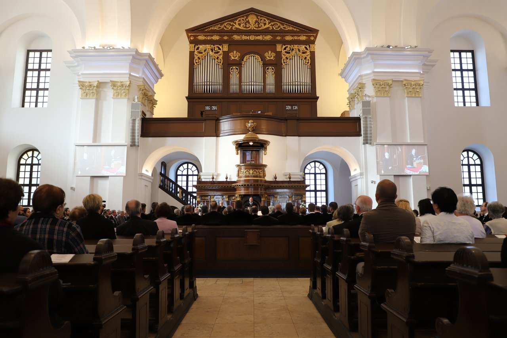

Magyarország harmadik legnagyobb területű és második legnépesebb települése, Hajdú-Bihar megye és a Debreceni járás székhelye, megyei jogú város. A megye lakosságának mintegy 38,2%-a él itt, a Tiszántúl legnagyobb városa. Időnként „a kálvinista Róma” néven vagy „cívisváros”-ként emlegetik. A Kelet-Magyarország régió, az Észak-Alföld statisztikai régió és a Tiszántúl nagy táj szellemi, kulturális, gazdasági, idegenforgalmi és közlekedési központja, Magyarország egyik legdinamikusabban fejlődő nagyvárosa.
A debreceni református nagytemplom Debrecen legjellegzetesebb épülete, 1500 m²-es alapterületével az ország legnagyobb református temploma, ezenkívül a legnagyobb protestáns templom is az országban. A Magyarországi Református Egyház jelképe, miatta nevezik Debrecent gyakran „kálvinista Rómának”. 1805 és 1824 között épült, klasszicista stílusban, a Kossuth tér és a Kálvin tér közt áll, a belvárosban.
Megközelítés:
Szállás:
Összesen: 24.631Ft.

Megközelítés:
Szállás:
Összesen: 63.771Ft.